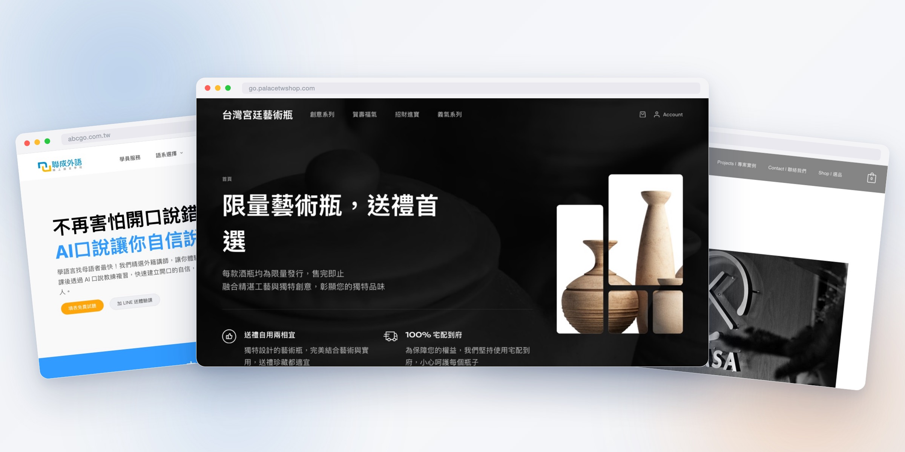

AI WEB COURSE
從一句想法，到真正上線。
AI Studio × GitHub × AI Coding × Vercel × Supabase

TODAY’S OUTCOME
BEFORE CLASS
三個帳號、兩組憑證，一台電腦。
THE WORKFLOW
05
生成前端 → 存進 GitHub → 本地開發 → 部署完成 → 追蹤成效
AI STUDIO
先把需求講清楚，再讓 AI 產出第一版。
畫面好看之外，也要讓分享與搜尋正常運作。
SAVE THE FRONTEND
用 AI Studio 的匯出功能，把前端放進自己的 GitHub repository。
LOCAL FIRST
在自己的電腦建立專案資料夾，再把 repository clone 下來。
AI CODING
在本地端打開專案，讓 AI 理解程式後協助你修改。
DEPLOY
匯入 GitHub repository，取得第一個公開網址。
DATA + ITERATION
先接上需要的資料，再反覆修改、測試、推送。
ROTATE BEFORE LAUNCH
所有貼給 AI 的 token 與 API key，都要在正式上線前重新產生。
Supabase anon key 必須搭配 RLS。
private key、service-role key、Vercel token 絕不可放進 frontend。
到 Project Settings → Environment Variables，逐一替換新 key。
確認 Preview 與 Production 使用正確環境。
部署完成後，以網站功能實測確認。
只有 GitHub Actions 自動化流程有使用時，才需要更新 GitHub Actions Secrets。
進入 Secrets and variables → Actions。
更新後重新執行 workflow 並確認成功。
本機 `.env.local` 也換成新 key；不要 commit 私密值到 GitHub。
確認讀取到的是新設定，而不是舊快取。
`.env.local` 必須被排除，推送前再檢查一次。
CLAUDE CODE
請它先讀專案規則；每次只完成一個可驗證的改動。
設定卡住時，讓 AI 直接看著畫面、協助操控瀏覽器。
協助閱讀頁面、點選設定與完成重複操作。
協助操控瀏覽器、檢查網頁與排除卡住的步驟。
只在設定卡住時使用；不要輸入敏感資料、token 或 private key。
讓 GitHub 連動 Vercel；Claude Code 不需要拿到 Vercel token。
自動部署設定成功後，記得把 GitHub repository 設為 Private。
STEP 05
KEEP BUILDING
小步完成，安全上線，持續迭代。